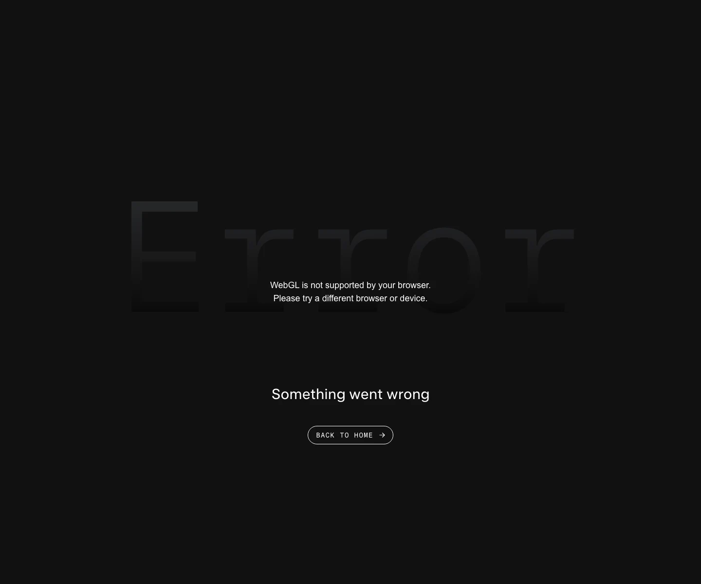

xAI 主题
xAI 的 Design.md 主题展示，围绕AI、媒体内容、SaaS 产品、开发工具组织页面。
Elon Musk's AI lab. Stark monochrome, futuristic minimalism.
AI媒体内容SaaS 产品开发工具浅色界面B2B 产品效率工具专业工具

来源
- 来源
- getdesign.md
- 镜像
- github:VoltAgent/awesome-design-md
- 网站
- https://x.ai/
- 详情
- https://getdesign.md/x.ai/design-md
色板
#0a0a0a: #0a0a0a#ffffff: #ffffff#fafaf7: #fafaf7#dadbdf: #dadbdf#7d8187: #7d8187#212327: #212327#1a1c20: #1a1c20#191919: #191919#363a3f: #363a3f#ff7a17: #ff7a17#ffc285: #ffc285#7c3aed: #7c3aed
字体
display: universalSansbody: Intermono: GeistMonohints: universalSans,Inter,GeistMono,ui-monospace,SFMono-Regular,Menlo,Monaco,Geist Mono,Geist,mono-kickers
圆角
control: 8pxcard: 8pxpreview: 0pxpill: 9999pxsource: design-md
间距
xxs: 2pxxs: 4pxsm: 8pxmd: 12pxlg: 16pxxl: 24px2xl: 32px3xl: 48px4xl: 64pxsource: design-md
使用建议
建议
- 建议：Reserve {colors.canvas} ({#0a0a0a}) as the only page surface. The brand is dark-canvas only。
- 建议：Set hero headlines in {typography.display-xl} Universal Sans weight 400 with {-2.4 px} tracking. The precision IS the voice。
- 建议：Use {rounded.pill} 9999 px on every interactive element. The pill is the brand。
- 建议：Pair Universal Sans (sentence-case) with GeistMono UPPERCASE (eyebrows, labels, metric counters)。
- 建议：Use white-translucent borders for outline buttons — the brand never uses solid white borders on its outline pill。
避免
- 避免：introduce a light-mode counterpart. xAI is dark-canvas only。
- 避免：bold display headlines. Weight 400 is the entire scale。
- 避免：use filled buttons broadly. The brand uses outline pills almost exclusively; one Sign Up white-filled pill is the rare exception。
- 避免：drop a drop-shadow on cards. Hairline borders carry elevation。
- 避免：substitute Universal Sans with a generic geometric sans without adjusting letter-spacing. The negative tracking is part of the brand。
查看 DESIGN.md